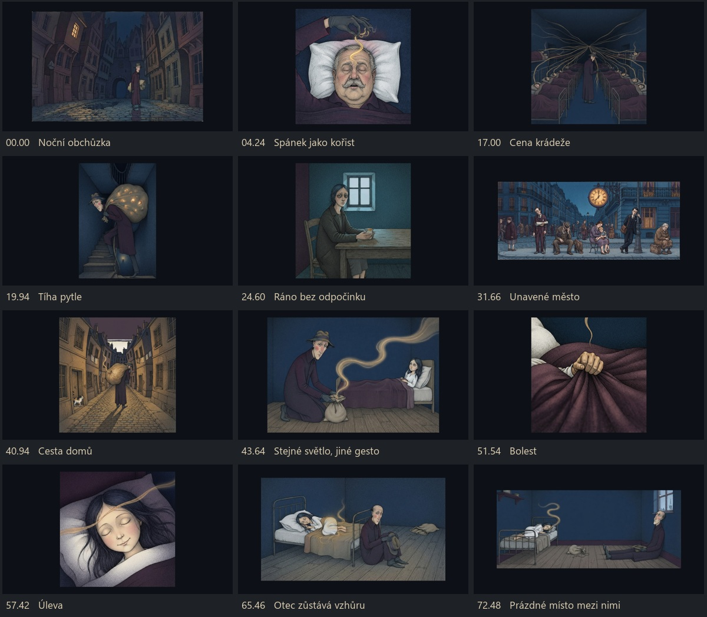

The Thief of Sleep
Cello Cool Club · filmová studie 01
Stejné světlo mění význam: ukradený spánek se stává darem. Studie střihu a jemného pohybu světla v původních ilustracích. Anglické titulky lze zapnout v přehrávači celé písně.
Stáhnout MP4
Záběry a časování
